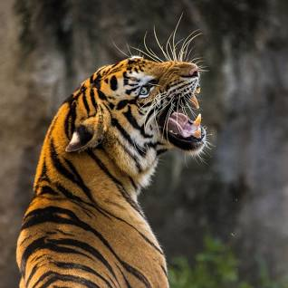
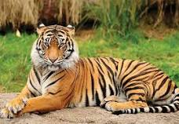
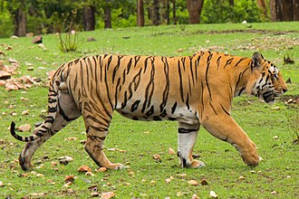
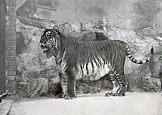
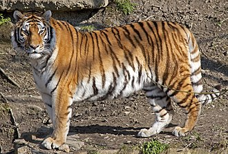
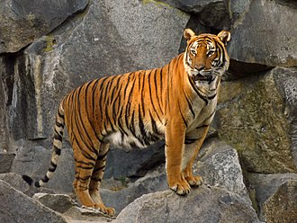
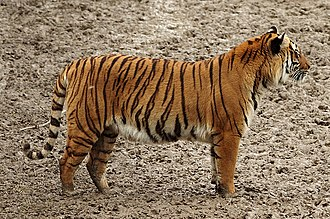

TIGER

The tiger (Panthera tigris) is the largest living cat species and a member of the genus Panthera. It is most recognisable for its dark vertical stripes on orange fur with a white underside. An apex predator, it primarily preys on ungulates, such as deer and wild boar. It is territorial and generally a solitary but social predator, requiring large contiguous areas of habitat to support its requirements for prey and rearing of its offspring. Tiger cubs stay with their mother for about two years and then become independent, leaving their mother's home range to establish their own.
The tiger was first scientifically described in 1758. It once ranged widely from the Eastern Anatolia Region in the west to the Amur River basin in the east, and in the south from the foothills of the Himalayas to Bali in the Sunda Islands. Since the early 20th century, tiger populations have lost at least 93% of their historic range and have been extirpated from Western and Central Asia, the islands of Java and Bali, and in large areas of Southeast and South Asia and China. What remains of the range where tigers still roam free is fragmented, stretching in spots from Siberian temperate forests to subtropical and tropical forests on the Indian subcontinent, Indochina and a single Indonesian island, Sumatra.
The tiger is listed as Endangered on the IUCN Red List. As of 2015, the global wild tiger population was estimated to number between 3,062 and 3,948 mature individuals, with most populations living in small isolated pockets. India currently hosts the largest tiger population. Major reasons for population decline are habitat destruction, habitat fragmentation and poaching. Tigers are also victims of human–wildlife conflict, due to encroachment in countries with a high human population density.
The tiger is among the most recognisable and popular of the world's charismatic megafauna. It featured prominently in the ancient mythology and folklore of cultures throughout its historic range and continues to be depicted in modern films and literature, appearing on many flags, coats of arms and as mascots for sporting teams. The tiger is the national animal of India, Bangladesh, Malaysia and South Korea.
Etymology
The Middle English tigre and Old English tigras derive from Old French tigre, from Latin tigris. This was a borrowing of Classical Greek τίγρις 'tigris', a foreign borrowing of unknown origin meaning 'tiger' and the river Tigris.[5] The origin may have been the Persian word tigra ('pointed or sharp') and the Avestan word tigrhi ('arrow'), perhaps referring to the speed of the tiger's leap, although these words are not known to have any meanings associated with tigers.
The generic name Panthera is derived from the Latin word panthera and the Ancient Greek word πάνθηρ ('panther').
Taxonomy
In 1758, Carl Linnaeus described the tiger in his work Systema Naturae and gave it the scientific name Felis tigris.[2] In 1929, the British taxonomist Reginald Innes Pocock subordinated the species under the genus Panthera using the scientific name Panthera tigris.
Subspecies
Following Linnaeus's first descriptions of the species, several tiger specimens were described and proposed as subspecies.[11] The validity of several tiger subspecies was questioned in 1999. Most putative subspecies described in the 19th and 20th centuries were distinguished on basis of fur length and colouration, striping patterns and body size, hence characteristics that vary widely within populations. Morphologically, tigers from different regions vary little, and gene flow between populations in those regions is considered to have been possible during the Pleistocene. Therefore, it was proposed to recognize only two tiger subspecies as valid, namely P. t. tigris in mainland Asia, and P. t. sondaica in the Greater Sunda Islands.[12]
This two-subspecies proposal was reaffirmed in 2015 by a comprehensive analysis of morphological, ecological and molecular traits of all putative tiger subspecies using a combined approach. The authors proposed recognition of only two subspecies, namely P. t. tigris comprising the Bengal, Malayan, Indochinese, South Chinese, Siberian and Caspian tiger populations of continental Asia, and P. t. sondaica comprising the Javan, Bali and Sumatran tiger populations of the Sunda Islands. The continental nominate subspecies P. t. tigris constitutes two clades: a northern clade composed of the Siberian and Caspian tiger populations, and a southern clade composed of all other mainland populations.[13]
The authors of the 2015 study noted that this two-subspecies reclassification will affect tiger conservation management.[13] It would make captive breeding programs and future re-wilding of zoo-born tigers easier, as one tiger population could then be used to bolster the population of another population. However, there is the risk that the loss of subspecies uniqueness could negatively impact protection efforts for specific populations.[14]
In 2017, the Cat Classification Task Force of the IUCN Cat Specialist Group revised felid taxonomy in accordance with the two-subspecies proposal of the comprehensive 2015 study, and recognized the tiger populations in continental Asia as P. t. tigris, and those in the Sunda Islands as P. t. sondaica.[15]
This two-subspecies view is still disputed by researchers, since the currently recognized nine subspecies can be distinguished genetically.[14] Results of a 2018 whole-genome sequencing of 32 specimens support six monophyletic tiger clades corresponding with the living subspecies and indicate that the most recent common ancestor lived about 110,000 years ago.[16]
The following tables are based on the classification of the species Panthera tigris provided in Mammal Species of the World,[11] and also reflect the classification used by the Cat Classification Task Force in 2017:
Panthera tigris tigris (Linnaeus, 1758)
| Populations |
Description |
Image |
| Bengal tiger |
Linnaeus's scientific description of the tiger was based on descriptions by earlier naturalists such as Conrad Gessner and Ulisse Aldrovandi.[2] Bengal tiger skins in the collection of the Natural History Museum, London vary from light yellow to reddish yellow with black stripes.[ |
 |
| Caspian tiger formerly P. t. virgata (Illiger, 1815) |
Illiger's description was not based on a particular specimen, but he only assumed that tigers in the Caspian area differ from those elsewhere.[17] It was later described as having narrow and closely set stripes.[18] The size of its skull did not differ significantly from that of the Bengal tiger.[12] According to genetic analysis, it was closely related to the Siberian tiger.[10] It had been recorded in the wild until the early 1970s and is considered extinct since the late 20th century. |
 |
| Siberian tiger formerly P. t. altaica (Temminck, 1844) |
Temminck's description was based on an unspecified number of tiger skins with long hairs and dense coats that were traded between Korea and Japan. He assumed they originated in the Altai Mountains.[20] The Siberian tiger was later described as having pale coats with few dark brown stripes. |
 |
| South China tiger formerly P. t. amoyensis (Hilzheimer, 1905) |
Hilzheimer's description was based on five tiger skulls purchased in Hankou, southern China. These skulls differed in the size of teeth and jaw bones by a few cm from skulls of tigers from India.[21] Skins of tigers from southern China in the fur trade were said to be vivid orange in colour with rhombus-like stripes. Because of differences in the shape of skulls, it was long thought to constitute the most ancient variety. It was noted to have a unique mtDNA haplotype |
 |
| Indochinese tiger formerly P. t. corbetti Mazák, 1968 |
Mazák's description was based on 25 specimens in museum collections that were smaller than tigers from India and had smaller skulls |
 |
| Malayan tiger formerly P. t. jacksoni Luo et al., 2004 |
It was proposed as a distinct subspecies on the basis of mtDNA and micro-satellite sequences that differ from the Indochinese tiger.[24] In pelage colour or skull size, it does not differ significantly from Indochinese tigers.[25] There is no clear geographical barrier between tiger populations in northern Malaysia and southern Thailand |
 |